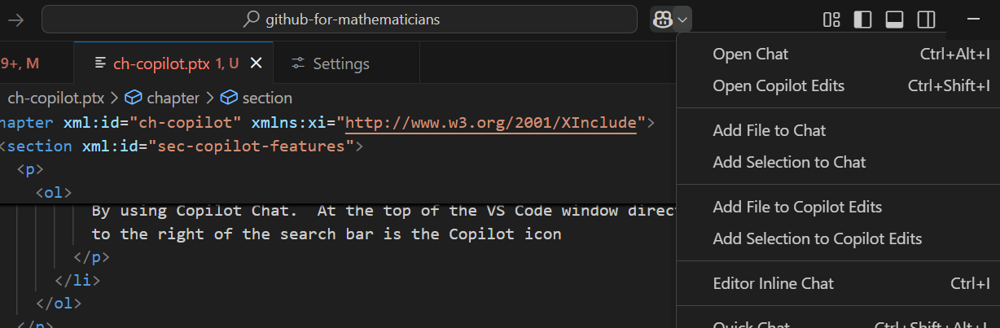

Chapter 5 Copilot and Other AI Assistants
In this chapter we will explore GitHub’s Copilot features, as well as how other AI assistants can be used with GitHub and VS Code.
Note that almost everything in this chapter will likely be out of date almost immediately. The current suggestions here are up to date as of 2025-01-08.
Section 5.1 AI Assistant Options
Copilot is GitHub’s AI assistant, tightly integrated with GitHub and VS Code through a pair of extensions. There is currently a free tier that allows for a limited number of interactions each month, as well as a $10/month plan that provides unlimited interactions with Copilot (there is a free trial of the paid version as well).
Depending on what you want to do with your project, other AI assistants might be a better fit. One notable alternative that might work even better for coding projects is Codeium. In particular, Codeium has a free tier that appears to offer unlimited interactions. Like Copilot, Codeium also works with VS Code through an extension and the two use similar interfaces, so it should be relatively easy to switch between the two.
1
codeium.comAll of the specific commands described below will be those of Copilot, but often the same commands will work with Codeium. In any event, we will focus on general principles of how to use these coding assistants.
Section 5.2 Setup
We will assume you want to use Copilot from inside VS Code, either on your own machine or in a Github Codespace. To get set up, follow the Quick Start Guide from the Copilot documentation.
1
docs.github.com/en/copilot/quickstart?tool=vscodeIn particular, make sure you have
- Enabled Copilot in your Github account.
- Installed the Copilot extension in VS Code.
That should be it.
Section 5.3 Features
There are three main ways you can interact with Copilot from inside VS Code:
- By accepting “ghost text” suggestions as you type. Copilot will will show you the most likely words to appear next to your cursor in light gray text. Hitting
TABwill accept the current suggestion in full;CTRL+RightArrowwill accept one word at a time. - Use Copilot Chat by clicking the Copilot icon at the top of the VS Code window, right of the search bar (see Figure 5.3.1). Select “Open chat” to open a panel on the right side of the window. This panel allows you to “Ask Copilot” questions, similar to using ChatGPT or another AI chatbot. The key difference is that Copilot uses your current file or workspace (or another selected source) as its context. You can also use voice commands to ask questions and have Copilot read its answers aloud.
- By using Copilot’s inline chat. While typing in the editor, or with a selection highlighted, you can use
CTRL+Ito get a floating chat window that can provide suggestions based on your cursor position or the current selection. You can accept or discard edits suggested by copilot easily from this interface.

Section 5.4 Things to Try
Here are a few features of Copilot you might want to try out.
- Suppose you are trying to write some code in a language you are not that familiar with. Copilot will suggest the next bit of code for you as you type. To get better suggestions, put in a comment describing what you want to do. (Hint: if you don’t know the syntax for comments, hit
CTRL+/to start a comment in most languages.) - Does the code do what you want it to? Is it confusing? Ask Copilot to explain the code to you. You can select the code, hit
CTRL+I, and then type/explain(note the forward slash). - Along these lines, try asking Copilot to document your code for you. Select the code, hit
CTRL+I, and then type/doc. -
Here is something I just did while writing this. I realized that I wanted all the keyboard shortcuts to be displayed as code, which in PreTeXt is done by enclosing them in
<c>tags. So I selected the entire document, hitCTRL+Iand typed “wrap all keyboard shortcuts here with<c>tags.” Copilot then let me see where it made changes (line by line) and let me accept them or not.A very new Copilot feature is Copilot Edits, which allow you to do such things for multiple files at the same time. I suspect this could also be useful for finding typos. -
If you are working on a mathematical proof or a complex equation, you can ask Copilot to help you format it correctly in LaTeX. Simply type your equation or proof in plain text, select it, hit
CTRL+I, and ask Copilot to convert it to LaTeX. This can save you a lot of time and ensure that your mathematical notation is accurate.NOTE: I don’t know if that’s true, the above paragraph was generated by Copilot from the prompt “Write a suggestion of something Copilot can do for a mathematician.”
One final thing you might want to try: Turn off completions. It can be distracting to see what Copilot thinks you should type next; I have found that it often interrupts the idea I have in my head. You can turn off completions by clicking the Copilot icon at the bottom of the VS Code window and selecting “Disable completions.” You can also disable completions for particular types of files.